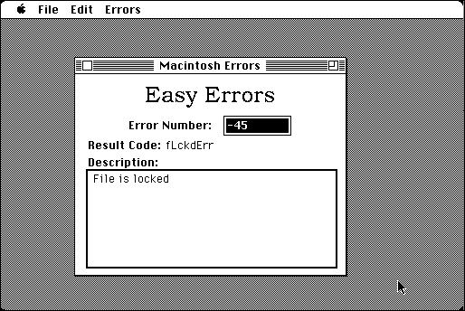

Download
easyerrors1.11.zip (53K) Easy Errors 1.11 repackaged into a zipped hfs disk image and checksum file. The disk image can be mounted with Mini vMac.
easyerrors1.11.sit.hqx (66K) Easy Errors 1.11 in the original format.
copyright: Dave Rubinic
mod date: Mar 9, 1995
license: freeware
Given a Macintosh error code, displays a description, as well as the constant name in the Macintosh API.

If you find these downloads useful, please consider helping the Gryphel Project, which hosts them.
Here are the md5 checksums for the downloads, signed with Gryphel Key 5:
--------- GRY SIGNED TEXT --------- 0afb30455b6869e8caded1e5e0a98e2a easyerrors1.11.zip 3fe2e5e2fc27590243680a408ce233eb easyerrors1.11.sit.hqx ------- BEGIN GRY SIGNATURE ------- Gry/4Xa8CFcUzxdN/FQmS9CHMn/m1fFwUPCOoSC7sOIkW/bllgz+NczWn2dpJNan 02h8OMTekyO3G4P40IcrGzVmmqykUDtjopl7W2yNBmxPApY9/qS61OmHHi0i3XEq LgpBuOxCHv0I7SuDIrQVEhuvFFA2B24J6KEvlzTi5PNNL4OqTmx6MbZ/R4nGDt9b -------- END GRY SIGNATURE --------